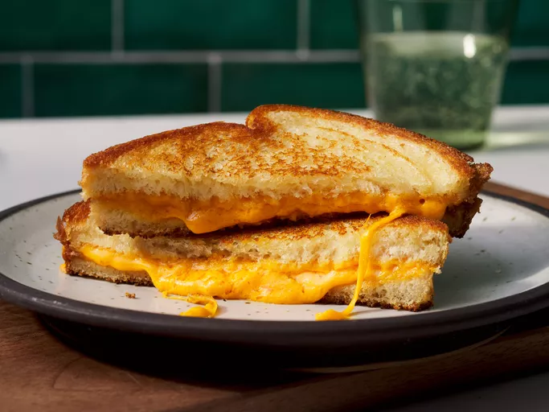

Recipe for Making a Grilled Cheese Sandwich

Description
A classic simple meal to make that only needs three ingredients.
You will also need a skillet, and can pick any type of cheese as you like.
Ingredients
- Two slices of bread.
- Butter
- American cheese
Steps
- Make the skillet hot.
- Spread butter over one side of a slice of bread.
- Lay the slice on the skillet with the butter side face down.
- Put the cheese on top of the slice of bread.
- Then put the other slice of bread on top of the cheese.
- Cook until bottom slice is brown, then flip and wait until other side is brown.
- Take out of skillet and enjoy your meal!